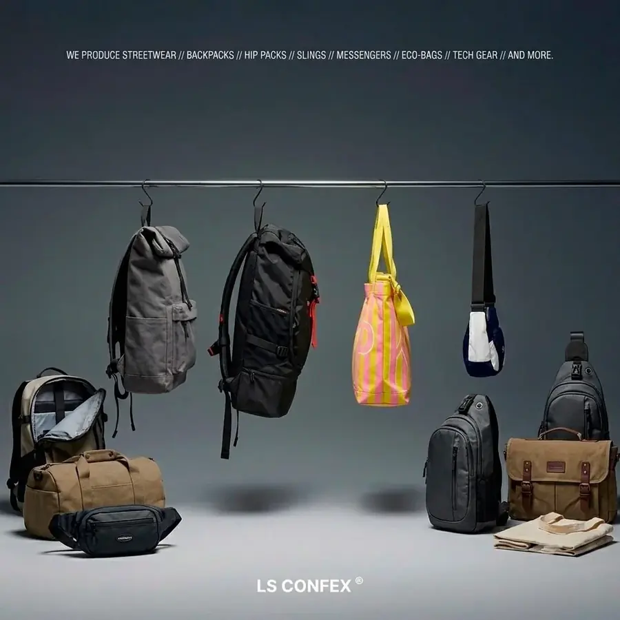

Desenvolvimento
Peça-piloto: como desenvolver o protótipo da sua bolsa
O que é a peça-piloto, por que ela é indispensável e o passo a passo do desenvolvimento de protótipo sob demanda para novas marcas.